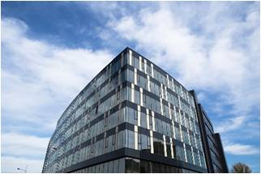
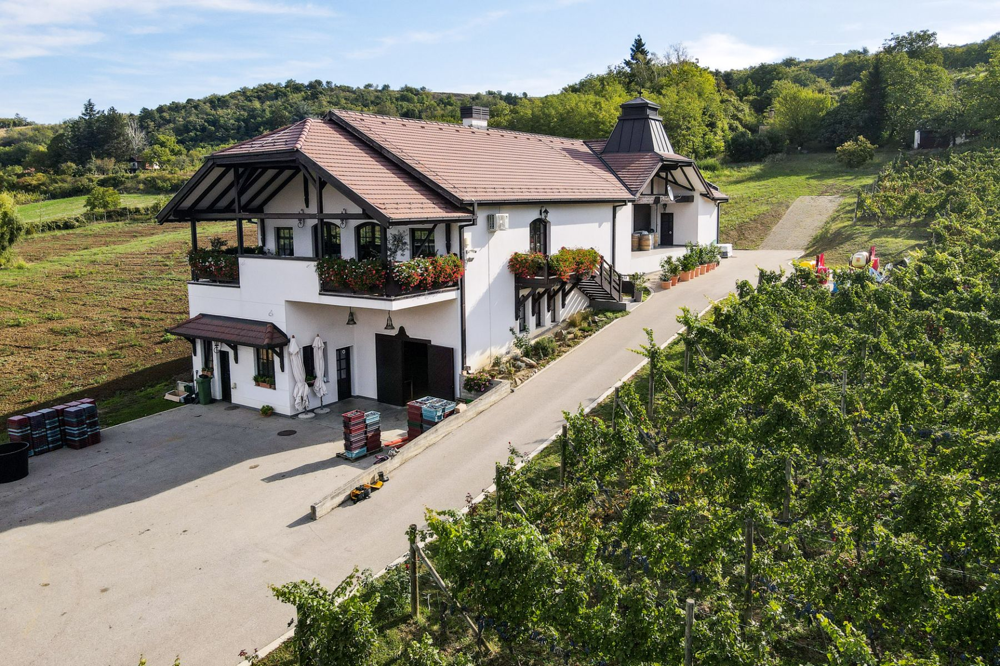
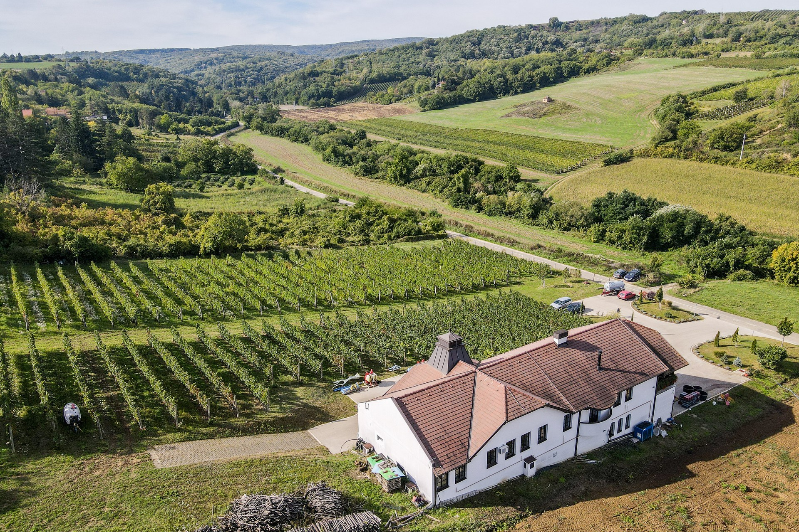
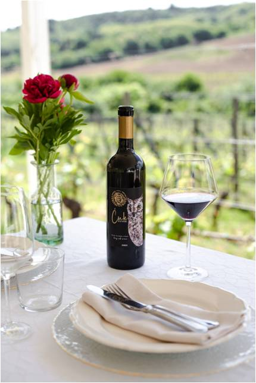
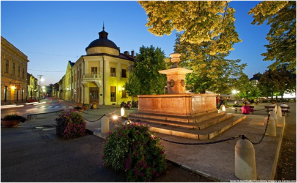

Prof. Dr. Andrea Ivanišević, Conference Chairperson
Prof. Dr. Boris Dumnić, Dean of the Faculty of
Technical Science
Dr. Milan Đurić, the Mayor of Novi Sad
Prof. Dr. Miroslav Trajanović, State Secretary
in the Ministry of Science, Technological Development and Innovation
Ms. Adrijana Mesarović, Minister of Economy of
the Republic of Serbia
Short
break – 10:45 – 11:00
Plenary Session (11:00-11:40) Chairs: Andrea Ivanišević and Minja Bolesnikov
Keynote Speakers:
Andrijana
Jovanović, State Secretary in the
Ministry of Economy
Ewa Glinska, Bialystok University of
Technology, Poland
Matevz
Obrecht, Faculty of Logistics, University of Maribor,
Slovenia
Aleksandar
Vujović, Faculty of Mechanical Engineering, University of
Montenegro
Session 1 (11:40-13:00) Chairs: Maja Petrović and Dragana Tomašević Pilipović
7 min per presentation
EXAMINING THE RELATIONSHIP
BETWEEN CHATGPT, GEMINI, AND BING USE AND LIFE SATISFACTION: A CASE STUDY OF
SLOVENIA –Anton Vorina
SUSTAINABLE INNOVATION AND TECHNOLOGY MANAGEMENT IN
SERVICE COMPANIES. STATUS QUO. POTENTIALS. CHALLENGES. AN EXPLORATORY STUDY
BASED ON AN ONLINE SURVEY OF HAIRDRESSING BUSINESSES IN GERMANY. –Daniela Ludin, Robin Pflieger, Erika Mueller and
Wanja Wellbrock
BRIDGING KNOWLEDGE, PROTECTION AND DEVELOPMENT GAPS
THROUGH AN INTERDISCIPLINARY MULTISTAKEHOLDER APPROACH TO NATURAL HAZARDS RISK
MANAGEMENT– Nadia Netti and Martina de Cristofaro
ENTREPRENEURS' EXPECTATIONS OF UNIVERSITY GRADUATES' COMPETENCIES IN THE
DEVELOPMENT OF SMART REGIONAL SPECIALIZATIONS: A CASE STUDY FROM POLAND – Ewa Glińska,
Katarzyna Krot and Ewa Rollnik-Sadowska
LEADERSHIP AS A FACTOR IN DESIGNING A FLEXIBLE
COMPANY'S ORGANIZATIONAL MODEL IN DYNAMIC BUSINESS CONDITIONS– Nikola
Gradojević, Vladimir Đaković and Snežana Marković
ŁÓDŹ AS AN EXAMPLE OF
SUCCESSFUL REVITALIZATION OF POST-INDUSTRIAL CITIES – Magdalena Rekść
THE CONCEPT OF SMART RURAL DEVELOPMENT ON THE EXAMPLE
OF THE MUNICIPALITY OF PETROVAC NA MLAVI – Vedrana Babić Lazarević,
Vladimir Pejanović and Aleksandra Prodanović Stamenović
THE POTENTIAL OF MEDICINE IN THE REPUBLIC OF CROATIA – Maja Vizjak
THE ECOCRATIC TURN OF
MAN-ENVIRONMENT-ORGANISM. TRANSHUMANIST AND POSTHUMANIST CONSIDERATIONS – Lazar
Imre
HORIZON EUROPE PROJECT EDTECH TALENTS PRESENTATION –
Uglješa Marjanović
13:00-14:00 Coffee and Catering Break Poster Presentations
Session 2 (14:00-15:30) Chairs: Mustafa Cem Aldağ and Bojan Martinović
7 min per presentation
COMPETITIVE NET-ZERO: A SIMULTANEOUS ENGINEERING
APPROACH TO SUSTAINABLE PRODUCT DEVELOPMENT AND MANUFACTURING – Martin
Scharf, Gernot Schlögl and Franz Haas
THE INFLUENCE OF A FLEXIBLE BATTERY CELL TESTER ON
IMPROVING THE SUSTAINABILITY OF THE BATTERY LIFECYCLE – Gernot Schlögl, Martin Scharf and Franz Haas
SUSTAINABILITY AS THE GOAL IN INNOVATIVE APPLICATIONS – Mustafa Cem Aldağ and Bulent Eker
USING MACHINE LEARNING PRACTICES TO DETECT FRAUD AND
RISK MANAGEMENT IN CREDIT CARD TRANSACTIONS – Enio Yzeiri, Egla Mansi and
Nerajda Feruni
CONCEPTUAL DESIGN FOR URBAN STREET RECONSTRUCTION USING
THE SHARED SPACE APPROACH – Ivan Cvitković, Katarina Stojanović and Ante
Klečina
SMART GRID AND CHALLENGES
OF GRID SUPPORT BY E-MOBILITY – Velimir
Strugar
PERMANENT INVOLVEMENT OF
DIGITIZATION AND MODERN TECHNOLOGY IN THE DIRECTION OF SUSTAINABLE GROWTH IN
THE TOURISM AND HOTEL INDUSTRY OF SERBIA – Tamara Gajić and Filip Đoković
DIGITAL TRANSFORMATION STRATEGY DYNAMIC FOR UTILITY SMART GRIDS SYSTEM
DYNAMICS MODELLING IN UNTANGLING COMPLEXITY – Himadri Banerji, Minja
Bolesnikov, Dario Silić(online)
THE FUTURE OF THE NEWSPAPER
INDUSTRY –Gregor
Franken
THE ROLE OF VALUE
CO-CREATION IN THE BRANDING OF FUNCTIONAL URBAN AREAS: A DELPHI ANALYSIS – Anna
Matwiejczyk
15:30-16:00 Coffee Break Poster Presentations
Session 3 (16:00-17:10) Chairs: Nadia Netti and Amila Omazic
7 min per presentation
DIGITAL TRANSFORMATION AND HR TECHNOLOGY – INTEGRATING
AI INTO TALENT ACQUISITION AND RETENTION OF EMPLOYEES – Katarina Milošević
and Ivana Katić
BENEFITS OF WORK-LIFE
BALANCE POLICIES FOR EMPLOYEES AND ORGANIZATIONS – Snežana Knežević, Tamara
Gajić and Dragan Vukolić
ANALYSIS OF FACTORS AFFECTING EMPLOYEE SATISFACTION
AND STRATEGIES FOR ITS IMPROVEMENT IN TOP MANAGEMENT OF A TRADING COMPANY – Snežana Mirković, Mila Kavalić, Verica Gluvakov
and Milan Nikolić
IT'S ALL ABOUT PEOPLE: ATTRACTING PROJECT SUCCESS WITH
HIGH-PERFORMANCE WORK PRACTICES – Milena Savković, Danijela Ćirić Lalić and
Danijela Gračanin
WORKPLACE 3.0: DECODING SERBIAN MILLENNIAL
GENERATION’S WORK BEHAVIOR – Ivana Jolović and Nevena Jolović
STRATEGY TO DEVELOP PROJECT BY USING HYBRID APPROACH – Sunaina Paul, Minja Bolesnikov, Katarina Stojanović and Dario Silić, and Milica
Njegovan (online)
AI-DRIVEN DECISION-MAKING: LITERATURE REVIEW ABOUT
TRANSFORMING PROJECT MANAGEMENT THROUGH ADVANCED TECHNOLOGIES – Michael
Wollweber (online)
THE ROLE OF TRANSFORMATIVE TECHNOLOGIES IN ENHANCING
THE QUALITY OF NURSING CARE DURING THE COVID-19 PANDEMIC – Nahid Kiarostami (online)
THE RIGHT TO LEGAL PROTECTION IN THE FIELD OF THE
ENVIRONMENT WITH SPECIAL REFERENCE TO LIABILITY FOR ENVIRONMENTAL DAMAGE,
ENVIRONMENTAL CRIMINALITY AND ENVIRONMENTAL FORENSICS IN RS – Tina
Janjatović
INTERREG PROJECT PRESENTATION: RAIL4REGIONS – Ante
Klečina, Ivan Cvitković and Nives Domjan Kačarević
17:10-17:20 Short Break
Session 4 (17:20-18:00) Chair: Maja Vizjak
7 min per presentation
PARAMETER-BASED TRANSFER LEARNING APPROACH USING
RANDOM FOREST FOR ESG SCORE PREDICTION IN DEVELOPING MARKETS –Ivana Markovic,
Jelena Z. Stankovic, Adela Ljajic, Milos Kosprdic and Jovica Stankovic
CHALLENGES IN TEACHING MATHEMATICS AND STATISTICS IN
MODERN TIMES – EXPERIENCES– Aleksandar Takači
SUSTAINABLE DEVELOPMENT EFFICIENCY OF EUROPEAN
COUNTRIES – Tijana Čobović, Gordana Savić and Milica
Jovanović
LABOUR MARKET DYNAMICS – YOUTH MIGRATION FROM SERBIA – Ljubica Duđak and Agneš Slavić
WAYS TO AVOID BANKRUPTCIES: AVIATION INDUSTRY IN THE
UNITED STATES - Rahaman Sheriff and Masatoshi Hara (online)
THE BALANCING ACT OF MANAGING FINANCIAL LIMITATIONS
WHILE ACHIEVING MISSION SUCCESS: A STUDY OF NONPROFIT ORGANIZATIONS – Paulraj
Joseph and Praveen Kumar (online)
Plenary Session (18:00-18:15) Chairs: Maja Vizjak and Maja Petrović
Keynote speakers: Nikola Fabris and Radoica Luburic – CAN ESG PRINCIPLES CONFLICT WITH CENTRAL BANK
POLICIES?
18:15-18:30 Thank you note and announcement of the second day of
the conference
18:30-19:00 Free time
19:00 - Gala dinner and wine degustation
Thursday, 31. October - Day Two
Case Study Club UNS
competition Science and Technology Park, Novi Sad
9:20 Registration of participants 10:00 - 10:45 Opening (FTN, Ceremonial Hall) 10:00 Opening speech and welcome address speech:
Welcome speech by the organizers and dignitaries
Brief overview of the agenda
Presentation of the jury and the organizational
team
11:00 - 13:00 Defense of solutions (NTP) 13:30 Announcement of winners, awards and recognition 14:00 Closing the event
Closing speech of the organizer
Opportunity for feedback from participants
14:15 - 15:00 Networking and socializing

15:00 - A Visit to Veritas Winery and Tour
of Sremski Karlovci




Poster presentations:
INFLUENCE OF STIMULUS FORMAT ON VIRTUAL CHARACTER
PERCEPTION - Gala Golubović,
Sandra Dedijer, Jelena Kerac and Teodora Gvoka
SMART SOLUTIONS FOR SMART CITIES – VETSOL - Zoran Anišić and Emil
Peić Tukuljac
APPLICATION OF SOLAR ENERGY IN WATER TREATMENT - Tijana Đuričić,
Draženko Bjelić, Aleksandra Borković, Dajana Dragić, Sanda Pilipović and
Borislav Malinović
ANALYSIS OF THE INNOVATION SYSTEM IN SERBIA FROM A
PUBLIC POLICY PERSPECTIVE - Jovana Simić and Dragan Miletić
IMPACT OF GLOBALIZATION ON THE PERFORMANCE OF MEDIA
SYSTEMS AND MEDIA - Goran Eror, Iva Šiđanin and Nemanja Tasić
CYBERSECURITY IN INDUSTRIAL INTERNET OF THINGS AND
COLLABORATIVE ROBOTS: INDUSTRY 5.0 PERSPECTIVE - Dragana Slavić, Aleksa
Komosar, Darko Stefanovic and Slavko Rakic
DOES THE POLITICAL-ECONOMIC RISE OF CHINA GO BEYOND
THE SCOPE OF THE GLOBAL POLITICAL ECONOMY? - Alpar Lošonc
A METHOD FOR CHOOSING THE LOCATION OF PRODUCTION
SYSTEMS USING A MULTIDISCIPLINARY APPROACH - Daria Vidović, Nemanja Sremčev and
Bojan Jerinić
INTEGRATION OF RISK ASSESSMENT INTO FINANCIAL MODELS IN ORDER TO MAKE MORE SUSSESSFUL DECISIONS - Krmpot Ksenija, Bojanić Ranko
DIGITALIZATION POSITIVELY ASSOCIATES WITH THE ADOPTION
OF SUSTAINABILITY PERFORMANCE METRICS IN MAINTENANCE PRACTICE: PRELIMINARY
STUDY FINDINGS - Marko Orošnjak,
Nebojša Brkljač and Kristina Ristić
INTEGRATING SUSTAINABILITY AND CIRCULAR ECONOMY
PRINCIPLES IN LEADERSHIP AMIDST UNCERTAINTY - Mirjana Ratić, Jelena
Ćulibrk, Maja Petrović, Nemanja Tasić and Nenad Medić
POSSIBILITIES FOR FOSTERING URBAN DEVELOPMENT IN
CITIES AND REGIONS THROUGH THE IMPLEMENTATION OF INTERDISCIPLINARY RESEARCH
OUTCOMES WITHIN THE FRAMEWORK OF INTERNATIONAL PROJECTS - Milena Krklješ and
Dejana Nedučin
WEALTHTECH: FUTURE TRENDS AND APPROACHES IN GLOBAL
WEALTH MANAGEMENT - Bojana Jokanovic, Andrea Okanovic, Sandra Brkanlic, Slavko
Ivkovic and Ivana Tomic
MULTI-CRITERIA DECISION-MAKING TECHNIQUES IN
AGRIBUSINESS MANAGEMENT - Grujica Vico, Mirjana Radovic, Radomir Bodiroga and
Danijel Mijić
EXPLORING THE POTENTIAL OF SEDIMENT BENEFICIAL USE:
ECONOMIC VIABILITY AND ENVIRONMENTAL SUSTAINABILITY - Dragana Tomašević
Pilipović, Andrea Ivanišević, Đurđa Kekrez, Miloš Šešlija and Igor Peško
ANALYSIS OF THE USE OF SOCIAL MEDIA MARKETING WITH AN
OVERVIEW ON GRAPHIC DESIGN ON THE EXAMPLE OF TREBINJE WINERIES - Mirjana
Miljanović, Igor Dutina and Marina Milićević
STRATEGIES FOR INDUSTRY: ENGINEERING SOLUTIONS IN
NOISE CONTROL AND RISK MANAGEMENT - Selena Samardžić and Robert Lakatoš
“HOT SINCE 82” - MULTIPLE ARCHETYPAL PERSONALITIES
(MAP) APPROACH IN DESTINATION CLIMATE CHANGE COMMUNICATION - Uglješa Stankov,
Miroslav D. Vujičić, Biljana Basarin and Danijlea Ćirić Lalić
COALESCENCE FILTRATION IN SUSTAINABLE ENVIRONMENTAL
PRACTICE - Dunja Sokolović
RESHAPING THE FUTURE OF PREPRESS WITH ARTIFICIAL
INTELLIGENCE - Sandra Dedijer, Nemanja Kašiković, Živko Pavlović, Željko
Zeljković, Boris Dumnić, Aleksandar Anđelković and Velibor Premčevski
ESG AND THE COST OF CAPITAL: EXAMPLES FROM EASTERN
EUROPE - Miroslav Ferenčak, Dusan Dobromirov and Mladen Radisic
IMPACT OF INDOOR AIR QUALITY ON WORKERS HEALTH AND
PRODUCTIVITY - Dragan Adamović
COMMAND RESPONSIBILITY IN INTERNATIONAL CRIMINAL LAW:
LEGAL AND POLITICAL ASPECTS - Borisa Lecic
RELATIONSHIP OF QUALITY, PRICE AND TOILET SOAP
CONSUMPTION - Aleksandra Borković, Tatjana Botić, Pero Dugić, Dijana
Drljača, Tijana Đuričić, Dajana Dragić, Sanda Pilipović and Branka Miladinović
MAPPING THE INTERSECTION OF CYBERSECURITY AND INDUSTRY
5.0: A BIBLIOMETRIC ANALYSIS - Aleksa Komosar, Dragana Slavic, Slavko Rakic and
Darko Stefanovic
TECHNOLOGICAL INNOVATIONS IN TOURISM BASED ON CIRCULAR
ECONOMY - Dragana Vuković, Božo Ilić and Marica Milošević
INFLUENCE OF LASER WELDING SPEED ON WELD WIDTH,
PENETRATION, REINFORCEMENT AND HEAT AFFECTED ZONE - Nikolina Stojišić, Zoran
Borović, Nikola Jevtić, Milan Pećanac and Sebastian Baloš
VULNERABILITY IN AGRICULTURE - DATA ANALYSIS - Milena
Zeljkovic, Ljiljana Popovic, Srdjan Popov and Tanja Vranic
AUTOMATIC IDENTIFICATION SYSTEMS IN INDUSTRY
APPLICATIONS - Gordana Ostojić and Stevan Stankovski
CYBERSECURITY ISSUES OF COMPUTING SYSTEMS - Stevan
Stankovski and Gordana Ostojić
IMPLEMENTING ARTIFICIAL INTELLIGENCE TO TRANSFORM
TRAVEL AND TOURISM SERVICES: A DETAILED ANALYSIS OF APPLICATIONS AT AIRPORT AND
HOTELS IN SERBIA - Tamara Gajić, Andrea Ivanišević and Snežana Knežević
OPTIMIZING FINANCIAL STRATEGIES IN INDIAN AQUACULTURE:
A CASE STUDY OF WEST GODAVARI - Avinash Betala and Masatoshi Hara
THE USE OF ARTIFICIAL INTELLIGENCE IN CREATIVE
ADVERTISING CAMPAIGNS - Dunja Bošković, Jelena Spajić, Bojana Milić, Ksenija
Mitrović and Danijela Lalić
MARKETING IN IT INDUSTRY: AN ANALYSIS OF GRADUATES'
COMPETENCIES AND CAREER PATHS - Jelena Spajić, Nikolina Milošević, Dunja
Bošković, Bojana Milić and Danijela Lalić
DATA ANALYTICS CASE STUDY IN OPTIMIZING WELL WORKOVER
PROCESS - Jelena Popara, Danijela Ciric Lalic and Milena Savkovic
ESSENTIAL PROJECT MANAGEMENT SKILLS FOR SUCCESSFUL
ENTREPRENEURIAL LEADERSHIP - Aleksandra Simić, Angela Fajsi, Slobodan Morača,
Jelena Borocki and Aleksandar Vekić
CURRENT TRENDS IN UPSKILLING AND RESKILLING: ANALYZING
MODERN LEARNING AND DEVELOPMENT PROGRAMS – Katarina Milošević and Ivana Katić
E-COMMERCE IN SLOVAKIA - Branislav Dudic, Alexandra
Mittelman and Jaroslav Vojtechovský
SUPPLY CHAIN FLEXIBILITY AND SMEs: THE ROLE OF HUMAN
RESOURCE FLEXIBILITY - Miroslav Dragić, Stevo Borojević and Nebojša Suvajčević
ESTIMATION OF THE QUANTITY OF CONCRETE FOR RECYCLING
USING ARTIFICIAL INTELLIGENCE TO CIRCULARIZE THE MATERIAL IN CONSTRUCTION AND
MAKE GREEN CONCRETE - Milena Senjak Pejić, Igor Peško, Maja Petrović, Mirjana
Terzić, Dragana Stanojević, Mirna Kapetina and Vladimir Mučenski
THE IMPORTANCE OF URBAN GRAPHIC DESIGN IN PLANNING
URBAN GREEN SPACE - Slađana Milovanović and Katarina Stojanović
USING INTERPRETATIVE STRUCTURAL MODELING FOR ANALYZING
KEY PROJECT MANAGERS' AND PROJECT TEAM MEMBERS’ SKILLS, CRITICAL FOR PROJECT
SUCCESS - Mirjana Jokanović Đajić, Budimirka Marinović and Danijela Ćirić Lalić
Dragana Gardašević, Milanka Gardašević Filipović and
Koviljka Banjević THE AHP APPROACH IN
SELECTING CANDIDATES FOR THE POSITION OF STRATEGIC PLANNING MANAGER
ONE SOLUTION OF LOW-COST LORA BASED IOT MODULAR
CONTROL DEVICE - Srdjan Tegeltija, Ivana Šenk, Laslo Tarjan, Gordana Ostojić
and Stevan Stankovski
THE APPLICATION OF ESG INSTRUMENTS AS A FUTURE
CHALLENGE FOR SUSTAINABLE DEVELOPMENT IN CORPORATE GOVERNANCE - Marijana Dukić
Mijatović, Andrea Ivanišević, Danijela Gracanin and Danijela Ćirić Lalić
EFFECTIVE NOISE MANAGEMENT – THE ROLE OF REGULAR CRANE
MAINTENANCE - Željana Kužet, Vladimir Mučenski and Selena Samardžić
SOCIO-ECONOMIC ANALYSIS AND EVALUATION OF THE CHOSEN
VARIANT FOR LAND RECLAMATION DESIGN - Andrea Ivanišević, Marijana Dukić
Mijatović, Danijela Gračanin and Danijela Ćirić Lalić
ARTIFICIAL INTELLIGENCE AND FINANCIAL MODELING - Ranko
Bojanić and Marko Jović
EFFECTS OF CONSUMER ETHNOCENTRISM, COSMOPOLITANISM,
XENOCENTRISM, METACOGNITIVE, AND COGNITIVE CULTURAL INTELLIGENCE ON PURCHASING
FAMOUS WORLD BRANDS - Stefan Zdravković, Dragana Gašević, Dragana Tomašević and
Marija Vranješ
CYBER
RISKS OF CYBERLOAFING - HRM PERSPECTIVES OF ORGANIZATIONAL SECURITY – Maja
Križanec Cvitković, Ana Globočnik Žunac, Marko Antić
DETERMINATION OF THE MAIN RISK FACTORS INFLUENCING THE
PROJECT SUCCESS: A SYSTEMATIC LITERATURE REVIEW – Nina Banduka and Uglješa
Marjanović
ENGINEERS’ SUSTAINABILITY,
DIGITAL AND INNOVATION COMPETENCES AND THEIR IMPACT ON ORGANISATIONAL
PERFORMANCE IN WESTERN BALKANS: EXEMPLARY CASE OF NOVI SAD– Amila Omazic and Bernd
Markus Zunk
FIRE RESISTANCE OF MASONRY MORTAR BLENDED WITH
ENVIRONMENTALLY-FRIENDLY MATERIALS - Vladan Pantić, Slobodan Šupić, Suzana
Draganić and Igor Džolev
CURRENT LANDSCAPE AND CHALLENGES: PRODUCT DEVELOPMENT
OF ELECTRIC SCOOTERS IN INDIA - Mahesh Patil, Minja Bolesnikov and Dario Silić
TECHNOLOGICAL INNOVATIONS IN TOURISM BASED ON CIRCULAR
ECONOMY - Dragana Vuković, Božo Ilić and Marica Milošević
ECONOMICS OF HEALTHCARE IN NEUROSURGERY: COST
EFFICIENCY AND FUNDING ANALYSIS IN THE MODERN HEALTH SYSTEM - Jagos Golubovic
and Andrea Ivanisevic
THE FINANCIAL AND ECONOMIC RISKS IN THE RISK
ASSESSMENT MODEL MADE FOR WASTEWATER TREATMENT PLANT - Jovana Topalić, Vladimir
Mučenski and Andrea Ivanišević
RIVER SEDIMENTS AS ROAD MATERIAL - Miloš Šešlija, Anka
Starčev-Ćurčin and Dragana Tomašević-Pilipović
EFFECT OF HEMP FIBER PRE-TREATMENT ON REPAIR CEMENT
MORTAR MECHANICAL PROPERTIES - Tiana Milović, Slobodan Šupić, Vesna Bulatović
and Vladan Pantić
Assoc. Prof. Ewa Glińska
Faculty of Engineering Management, Bialystok University of Technology, Poland
Prof. Aleksandar Vujović
Faculty of Mechanical Engineering, University of Montenegro
Assoc. Prof. Matevž Obrecht
Faculty of Logistics, University of Maribor, Slovenia